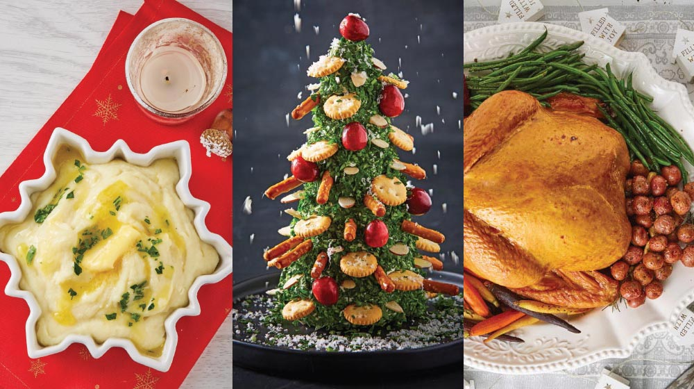

Los Comics
Por:Dennys Marquez
Fecha: 01 de Octubre del 2021
Un cómic es una serie o desarrollo de viñetas con desarrollo narrativo. También se puede definir como relato gráfico breve y entretenido que consta principalmente de dibujos encuadrados en viñetas y que encierra los diálogos o pensamientos escritos de sus personajes en una especie de «burbuja».
Leer mas...
20 comentarios
6 beneficios de salud del café
Por:Dennys Marquez
Fecha: Martes 23 de Mayo del 2021
La mayoría de los estudios concuerdan en que un consumo moderado de café, entre tres y cuatro tazas al día, es beneficioso para la salud, ya que aporta nutrientes y protege al organismo contra ciertas enfermedades.
Leer mas...
14 comentarios
Anota estos alimentos que te ayudarán con el descanso de tu cuerpo y la recuperación de los músculos
Por:Dennys Marquez
Fecha: Lunes 14 de Enero del 2021
Horas y horas de entrenamiento a nuestras espaldas. Queremos dar lo mejor de nosotros mismos y llevar a cabo un entrenamiento completo. Los ejercicios son duros e intensos y los músculos lo notan, aunque lo parezcan, no son de piedra, necesitan descansar y una buena recuperación.
Leer mas...
43 comentarios
33 RECETAS PARA UNA NAVIDAD LLENA DE MAGIA Y SABOR

Por:Dennys Marquez
Fecha: Martes 19 de Octubre del 2020
La Navidad es muy especial por muchos motivos, y uno de ellos son sus diferentes sabores, llenos de magia y tradición. Y como nos gustan tanto, te compartimos 33 recetas navideñas, tal y como a ti te gustan: fáciles, deliciosas e ideales para compartir.
Leer mas...
86 comentarios
10 CONSEJOS DE VIDA PARA APRENDER A VIVIRLA
Por:Dennys Marquez
Fecha: Martes 21 de Diciembre del 2021
El tiempo vuela y mucha gente se da cuenta de ello cuando ya es muy tarde. No seas de esas personas que se arrepienten por no vivir su vida de la manera que hubieran querido.
Leer mas...
133 comentarios